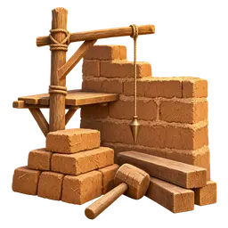
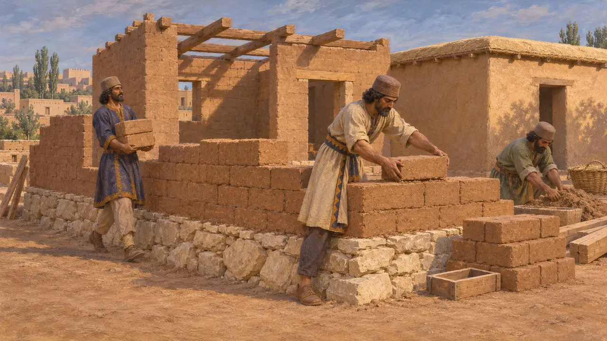
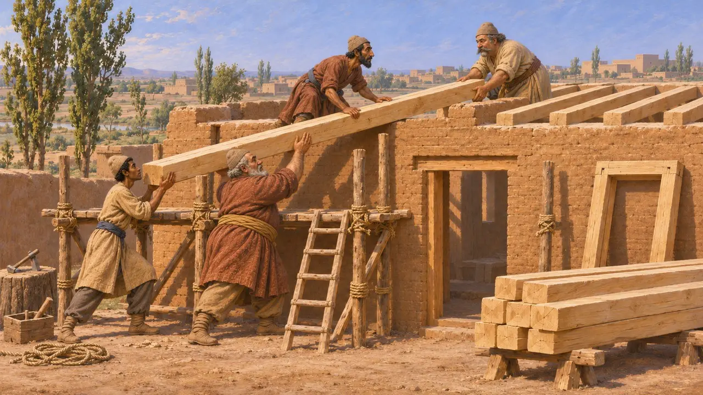
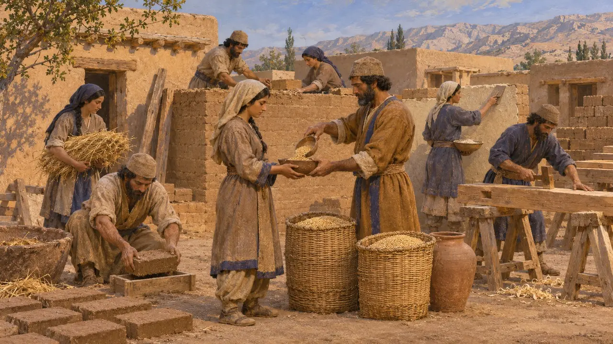
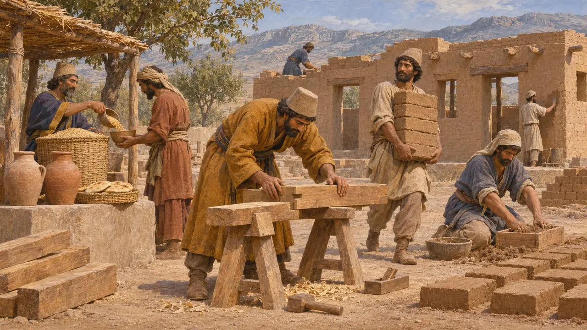

Builders' Yard
The brickmakers, carpenters and labourers who raised ordinary buildings, about 550-480 BCE
Most buildings of the Achaemenid world were not cut stone but sun-dried mud brick laid on stone footings, with timber beams carrying flat roofs of packed earth. Crews of brickmakers, carpenters and labourers raised them, fed and paid from royal and local stores.
In the game: The game gathers builders in a yard that sends crews to every new site on its roads, while carts bring timber, stone and clay. This is a simplification: real crews were hired, rationed or levied by the job, not kept in one standing yard.

Mud brick on stone footings
In the recordExcavated houses, storerooms and palace wings at Pasargadae, Persepolis and Susa stood on footings of rubble or cut stone, with walls of sun-dried mud brick above. Brick kept the rooms cool in summer and warm in winter, but rain and rising damp wore it away, so a good stone base and a sound roof mattered most.
D. Stronach, Pasargadae, 1978; E. F. Schmidt, Persepolis I, 1953

Timber for beams and scaffolds
In the recordRoofs were carried on wooden beams, and the long timbers of the great halls were brought from far away: Darius's Susa charter names cedar from Lebanon and yaka wood from Gandhara and Carmania. Ordinary buildings used poplar and other local wood, which also served for doors, ladders and the scaffolds the builders worked from.
DSf; D. Stronach, Pasargadae, 1978

Crews on the ration lists
In the recordThe Persepolis Fortification and Treasury tablets list work groups (kurtaš) by trade and by the rations or silver they drew, among them carpenters, brickmakers and plasterers. They show building as organised, paid work done by crews brought together for a job, men and women alike.
R. Hallock, Persepolis Fortification Tablets, 1969; G. Cameron, Persepolis Treasury Tablets, 1948

How free were the builders
DisputedHistorians still argue over how many of these workers were hired craftsmen, how many were levied from their villages for a season, and how many were deportees settled near the royal works. The tablets record their pay and food, not their status, so the answer may have differed from crew to crew.
P. Briant, From Cyrus to Alexander, 2002
Sources
- DSf
- R. Hallock, Persepolis Fortification Tablets, 1969
- G. Cameron, Persepolis Treasury Tablets, 1948
- D. Stronach, Pasargadae, 1978
- E. F. Schmidt, Persepolis I, 1953
- P. Briant, From Cyrus to Alexander, 2002